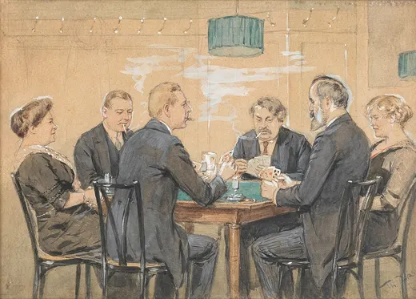

Coffee Snobs and Cake Breaks
Italians drink espresso standing up, Swedes stop for fika, Viennese linger for hours. Are Europeans really coffee snobs — or is the coffee break about something else?
Europe · Food & daily rituals · Lesson 4 of 7
🌍 World map · ← Around the World: Europe · ← Blunt Dutch, Polite British? · Kisses, Handshakes and Personal Space →

- How do people drink coffee or tea where you live?
- Do you take breaks with colleagues?
- Is there a "wrong" way to drink coffee?
The words for today's story
Each new word is hidden in a sentence. Read it aloud and say what you think the bold word means from the rest of the sentence — then reveal it and see how close you were.
Now use them — out loud
- Using any four of these words, predict: what do you think the stereotype gets right — and what does it get wrong?
- Which words describe behaviour and which describe attitudes? Sort them out loud and say why.


Credit: Theo Zasche, Austrian painter (1862-1922) · via Wikimedia Commons, Public domain
The story, in three parts
Read each part. After it, there's a quick comprehension check (try the questions from memory first), then one thing to discuss.
Part 1 — Coffee houses and ideas
Coffee arrived in Europe in the 1600s. London's first coffee house opened in 1652, and these places were sometimes called "penny universities": for the price of a coffee, people would read newspapers and argue about politics and science. In Vienna, coffee houses became living rooms for writers and thinkers, where regulars used to sit for hours over one cup. In 2011 Viennese coffee-house culture was added to Austria's national inventory of UNESCO intangible cultural heritage.
1. Why were London coffee houses called "penny universities"?
2. What happened in 2011?
1. For a penny's coffee you could read and debate.
2. Viennese coffee-house culture was listed as intangible heritage in Austria.
- Where do people meet to discuss ideas today?
Part 2 — The Italian bar
In Italy, many people drink a quick espresso standing at the bar, often paying less than at a table. The famous "rule" against cappuccino after about 11 a.m. or after a meal is a custom, not a law: many Italians see milky coffee as a breakfast drink and believe it's heavy after food. Most baristas will happily serve one — though some may raise an eyebrow.
1. Where do many Italians drink espresso?
2. Is the cappuccino "rule" a law?
1. Standing at the bar.
2. No — it's a custom.
- Are food "rules" about taste, health or identity?
Part 3 — Fika and the social break
In Sweden, fika means a break for coffee and something sweet, often a cinnamon bun, ideally with other people. Many workplaces have regular fika times, and the point is the conversation as much as the coffee. The Nordic countries are among the world's biggest coffee drinkers per person, with Finland often at or near the top.
1. What is fika?
2. Which country often tops coffee consumption per person?
1. A coffee break with something sweet, usually with others.
2. Finland.
- Should workplaces schedule social breaks?
Grammar — Used to & Would — Past Habits
Customs change. To describe how daily life used to be, English uses used to and would.
• used to + verb for past habits and states: "Coffee houses used to be full of newspapers."
• would + verb for repeated actions only: "Writers would sit there all day."
• Negative: didn't use to.
1. used to or would?
Complete each sentence about Coffee Snobs and Cake Breaks. Use the word in brackets.
1. In the 1600s, Londoners (read) newspapers in coffee houses.
2. Viennese writers (sit) for hours over one cup.
3. Coffee (not be) common in Europe before the 1600s.
1. used to read / would read
2. would sit / used to sit
3. didn't use to be
2. Complete with the correct form
1. Italians (drink) cappuccino after lunch? (Did … use to)
2. Vienna (have) hundreds of coffee houses. (state → used to only)
3. Every afternoon, my grandfather (stop) for fika.
1. Did … use to drink
2. used to have
3. would stop / used to stop
Hold on to this — you'll need it in the Speak tab.
Going deeper
Coffee "snobbery" stereotypes come from strong local habits that visitors see as rules. But the rituals are really about time and company: standing at the bar is a quick social moment, fika protects a pause in the day, and the Viennese café sells space and time more than drinks. The stereotype focuses on the cup; the reality is about people.
- Why do food customs become national symbols?
- Is the coffee or the company more important?
- What break could you share with colleagues?
Speak
This is the heart of the lesson — do all of it out loud. The timer is there to keep you going: fill the time with detail rather than escaping it.
Tell the story of Coffee Snobs and Cake Breaks in your own words, as if to a friend who believes the stereotype. Move through the arc: Coffee arrives → penny universities → Vienna → Italian bar → cappuccino custom → fika.
Use today's grammar at least three times, and work in at least five key words (ritual, linger, custom, frown on, regular, debate, pastry, heritage).
"Food rules are just snobbery." Discuss.
Tell a story from your own world — work, family, the news — that connects to this topic. Stuck for an idea? Pick one of these and run with it:
- A drink ritual in your country.
- A café you love.
- A food "rule" you were told.
- Breaks at work.
To finish — the bigger questions
- Which coffee culture would suit you best?
- Who will you invite for a break this week?
- Before you go — from memory: give two sentences about Coffee Snobs and Cake Breaks using Used to and Would — Past Habits, and say one cross-cultural tip you could use this week.
🌍 World map · ← Around the World: Europe · ← Blunt Dutch, Polite British? · Kisses, Handshakes and Personal Space →